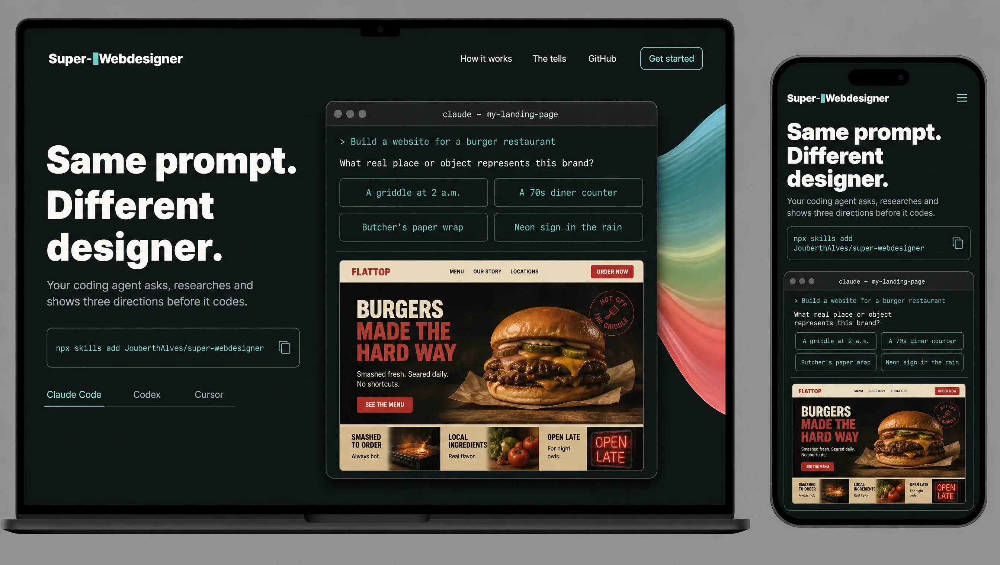
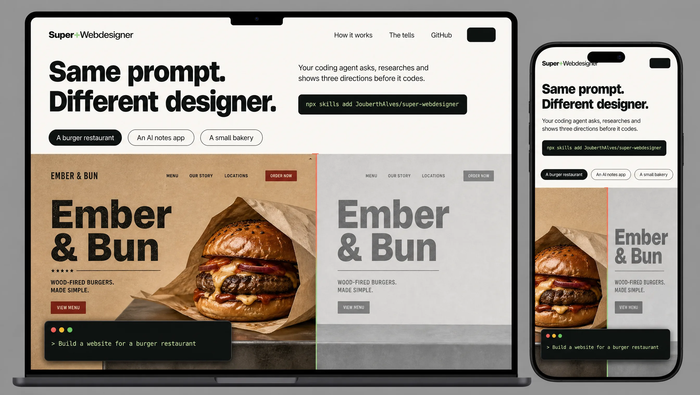
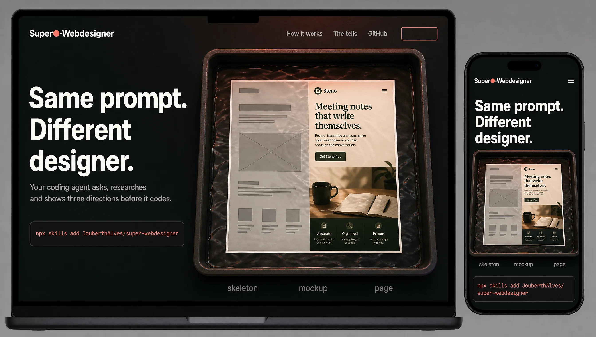

Grey skeletons, first screen at phone (390 px) and desktop (1440 px), then the whole page. Colour only in the swatches. Brief: the code editor at night, pride ("my pages are going to look like this"), web-tech sites as the influence, Stripe's motion, lively. Same copy in all three, so you compare the design, not the words.
One mockup per direction, first screen on a laptop and a phone, with the real copy. The pages shown inside them (the burger and notes pages) were made up by the image model; the build uses the real pages from the examples instead.



Best of the niche. 10 of 14 sites are dark with the real product early; A is that, at their level, in the editor's own night colours instead of black plus a glow. The agent runs in the hero and the visitor answers its first question.
Phone, 390 px
Desktop, 1440 px
The whole page, 8 sections
Breaks the niche: every site leads with the dark tool; B leads with the page you get, big and light, with the editor shrunk to a small window that shows the one line that made it. Pride is about the result, so the result is the hero.
Phone, 390 px
Desktop, 1440 px
The whole page, 6 sections
Outside reference: a photographer's darkroom. The editor at night meets the safelight; the page develops from the grey skeleton to the coloured mockup to the finished page, which is the skill's own flow, as you scroll.
Phone, 390 px
Desktop, 1440 px
The whole page, 6 sections